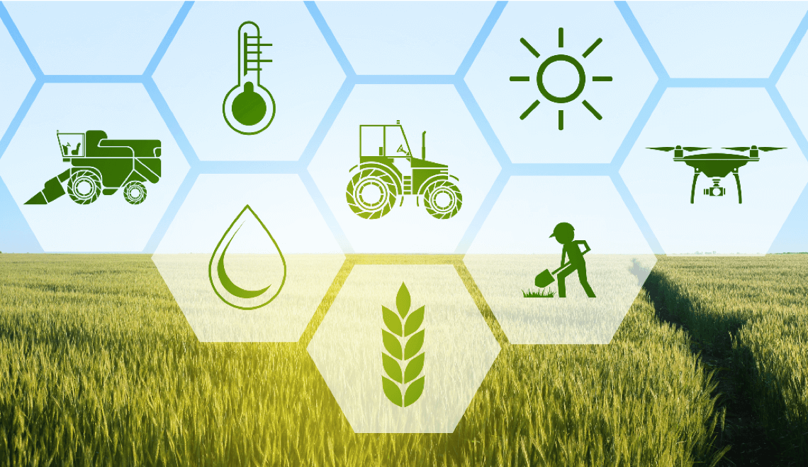
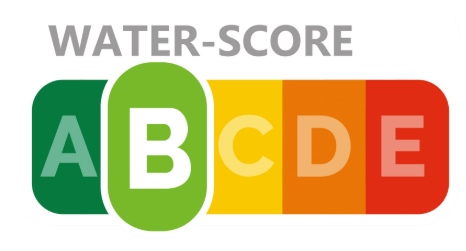

What do you need to know as a farmer?
Sustainability in farming doesn’t need to financially burden you. Dutch farmers are already adopting practices like precision fertilizer, manure storage systems, and grazing strategies. These techniques allow farmers to cut down on their nutrient runoff and improve surface water.
Evaluate your farm
WaterCredits
Water Credits Calculator estimates the nitrogen emission levels in your land, compares these numbers to government-issues thresholds and calculates required Water Credits based on characteristics and management of your livestock farm.
Water Score
Water Score rates overall water use of your farm, based on several sustainable management practices and will determine your Water Score. It examines farmer's practices via a questionnaire and estimates if the farmer is using acceptable practices.